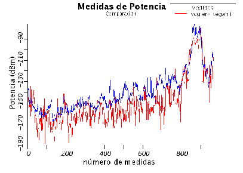
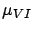
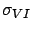
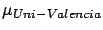
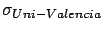
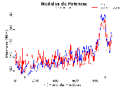
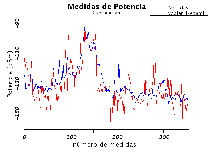
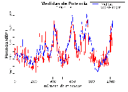

El modelo más complejo es el modelo propuesto que se denominó
Vogler-Ikegami. El mismo únicamente hace una suposición y es que el
mecanismo dominante de propagación es sobre los techos de los
edificios. Esta hipótesis, como se mencionó en la sección 5.4,
es inherente a suponer que las edificaciones pueden ser sustituidas
por pantallas infinitas, pues se está despreciando la propagación
por difracción en los lados de las mismas. Por ello, la atenuación
en aquellos casos donde la radiobase esté por debajo de las
edificaciones será sobreestimada, sobre todo en los puntos más
cercanos a la misma, pues allí el aporte de la difracción por los
lados de las edificaciones es especialmente significativo al total
de la potencia.
Para el entorno de estudio, es de esperar que en el funcionamiento
``normal'' del modelo, la atenuación sea sobreestimada. La
implementación utilizada para la validación se realizó con los
valores por defecto para los términos debidos a la atenuación desde
la última edificación hasta el móvil (los pertenecientes a
), y se irán variando los parámetros para el cálculo de la
integral de Vogler (ver sección 10.8.2) de manera de ver
los efectos que tienen los mismos sobre el resultado de la
predicción.
Para comenzar, los parámetros de la integral se asignaron en
aquellos valores que dieron buenos resultados en el cálculo de la
integral de Vogler (10 repeticiones, 0.95 de margen de seguridad,
10% de tolerancia de error y una cantidad máxima de 8
edificaciones). En este caso, la cantidad de cuchillos despreciados
es mínima, por lo tanto, y por lo dicho anteriormente, la pérdida de
camino será sobreestimada. Ahora bien, como se puede apreciar en la
figura 12.8, la sobreestimación no es mayor cerca de la
radiobase que lejos de la misma. De esto se puede concluir que la
propagación por difracción en los lados de las edificaciones es
importante, tanto en la lejanía de la radiobase como cerca de la
misma, en los casos en que la antena se encuentre por debajo de las
edificaciones circundantes.
Figura:
Las medidas en la ruta 0 y la predicción según el modelo de
Vogler-Ikegami con 0.95 de margen de seguridad y 10% de
tolerancia

En la tabla 12.6 se puede apreciar los valores de la
media y la varianza del error para esta primera implementación del
modelo de Vogler-Ikegami. Por lo dicho, la media resultó alta y
negativa. La varianza resultó algo mayor que para los modelos
anteriores, en este caso debido a que el cálculo determinístico de
la atenuación por difracción en múltiples cuchillos resulta bastante
variable de punto a punto.
Tabla 12.6:
Media y desviación estándar del error para el modelo de
Vogler-Ikegami en una implementación inicial
Ruta
(dB)
(dB)
route00
-9.99
10.41
route01
-6.78
10.33
route02
-10.16
12.02
Tabla 12.7:
Media y desviación estándar del error para el modelo de
Vogler-Ikegami y Uni-Valencia
Ruta
 (dB)
 (dB)


route00
0.98
10.73
0.2
8.7
route01
-2.39
8.17
-6.6
7.0
route02
-3.17
10.58
-7.4
10.3
Figura:
Las medidas en las tres rutas y su respectiva estimación
según SAPO para el modelo de Vogler-Ikegami con 0.99 de
margen de seguridad y 1% de tolerancia



Ahora bien, si asignamos valores de manera que la cantidad de
cuchillos considerada sea menor, el resultado mejora. Se puede por
ejemplo tomar un margen de seguridad más cercano a uno, combinado
con una tolerancia del error menor. Si por ejemplo los asignamos a
0.99 y 1%, el resultado de la predicción mejora tanto en media como
en varianza.
Para profundizar aún más la validación de este modelo, se compararon
las predicciones realizadas en la implementación con los valores
recién mencionados y el modelo Uni-Valencia, que también utiliza el
método de Vogler para calcular la atenuación por múltiples
cuchillos. Este modelo considera además la propagación por los lados
de las edificaciones, aunque en las predicciones que se obtuvieron
del mismo [16] no se utilizó esta capacidad, por lo
que la comparación entre Vogler-Ikegami y éste es más apropiada.
Para la implementación de Vogler-Ikegami ya mencionada, la
comparación entre la media y la varianza del error cometido por
ambos modelos se puede apreciar en la tabla
12.7. En todos los casos, tanto la media como
la varianza son muy similares para ambos modelos. A su vez, en el
informe de COST231 [16] también se muestran las
gráficas de las predicciones con este modelo, las cuales son muy
similares a las que se muestran en la figura (ver figura
12.9).
Siguiente:Conclusiones de la validación Subir:Performance de los modelos Anterior:MOPEMÍndice General
SAPO